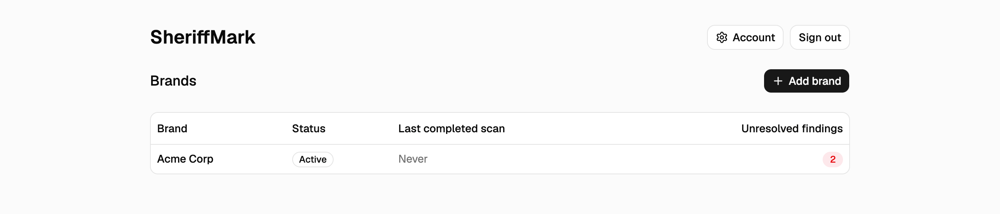
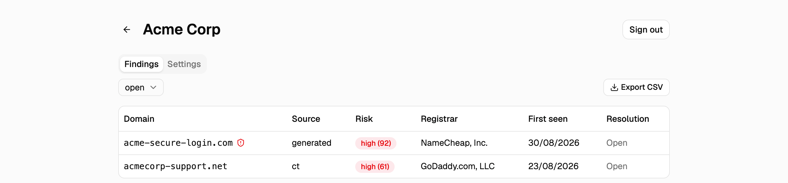
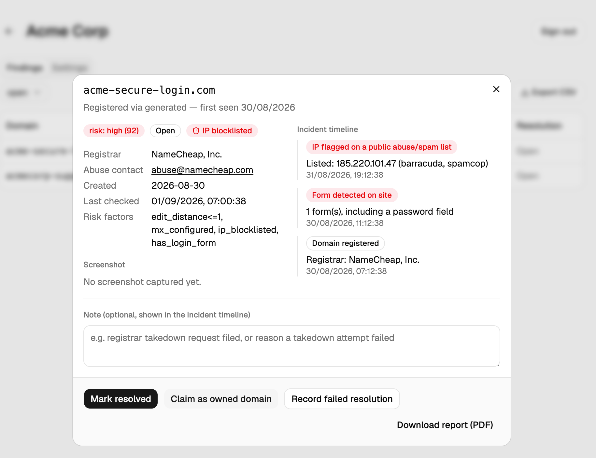

Open-source monitoring for typosquats, lookalikes, and combosquats of your brand — with evidence to support enforcement action. Self-host it anywhere, or nowhere at all.
New domains that could pass as yours — before someone else notices them first.
Homoglyphs, bitsquats, keyboard typos, TLD swaps, and combosquat keywords — algorithmic candidate generation, checked against real DNS/RDAP data.
Incremental CT-log polling catches domains the generator never predicted — anything anyone actually deploys a certificate for.
A transparent, weighted heuristic — every score comes with the named factors behind it, not a black box.
RDAP/whois abuse contacts and public IP-blocklist hits recorded automatically on every finding — recording only, never auto-filed.
One-click PDF export: registration data, DNS records, screenshot, risk factors, and the full incident timeline — ready to hand to counsel or a registrar's abuse desk.
Email, Slack, Discord, or a generic webhook for SIEM ingestion — pick whatever your team already watches.
A real console — brands, findings, and the full incident trail behind each one.



One process, one port, SQLite by default — no Docker or database service required to try it.
pipx install sheriffmark # or: pip install sheriffmark
sheriffmark serveThat's it — no clone, no build step. The API and the built UI are served together on one port, writing to a SQLite file in your current directory. Available on PyPI; see the README for Postgres, Docker, multi-container setups, and building from source.